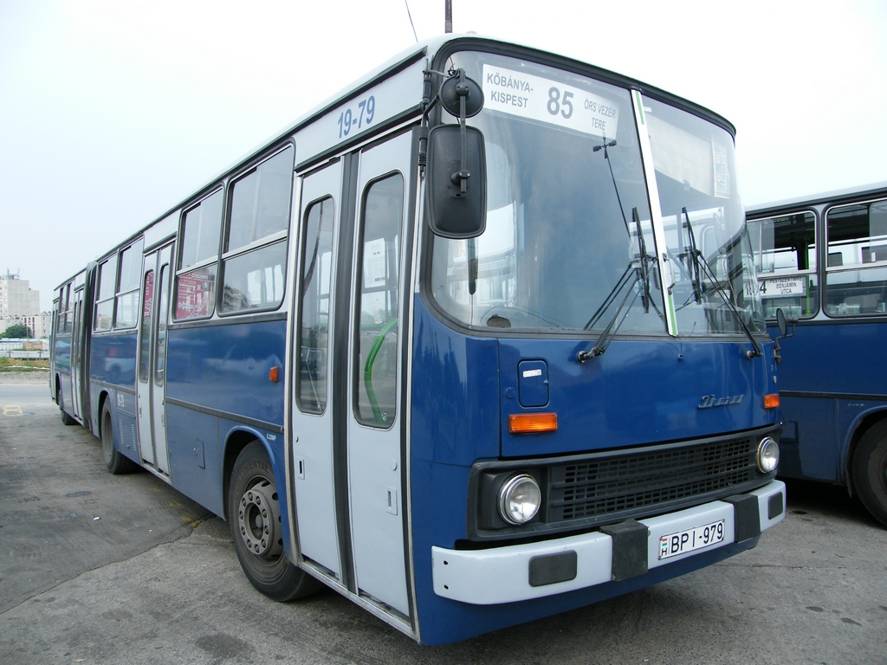

Az Ikarus 280 külföldön
Az Ikarus buszok külföldre történő importálásának lebonyolításával a MOGÜRT Gépjármű Külkereskedelmi Vállalat foglalkozott.
Az alábbi országokba importáltak ilyen buszokat:
- Afrika
- Csehszlovákia
- Amerika
- Görögország
- Közel-kelet
- Lengyelország
- Németország
- Szovjetunió és utódországai
- Távol-kelet
- Törökország

Ikarus
435-ös típus